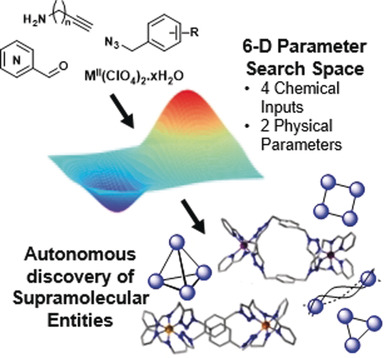

Kowalski, MacGregor, Long, Bell, Cronin; "Coordination Chemistry Robots for Generation of Libraries and Autonomous Exploration of Self-Assembly and Reaction Space" (In Preparation)

Porwol, Kowalski, Henson, Long, Bell, Cronin; "An Autonomous Chemical Robot Discovers the Rules of Inorganic Coordination Chemistry without Prior Knowledge" Angew. Chem. Int. Ed., 2020, 59(28), 11256-11261 (DOI: 10.1002/anie.202000329)
Kowalski, Bell, Cronin; "Automated Synthesis of Coordination Complexes" RSC Scottish and North of England Dalton Division Meeting, August 21st 2021, Flash Presentation, [Online]
Kowalski, Asche, Mehr, ALife and Complexity Team, Cronin; " Converging on a Long-Term Goal: Chemical Selection Engines " RSC Twitter Poster Competition, March 2nd 2021, [Online]
Kowalski, Porwol, Henson, Long, Bell, Cronin; " Autonomous Chemical Robot Discovery the Rules of Coordination Chemistry " CIC GIDW Virtual Poster Competition, July 9th 2020, [Online]
Sinclair, Pow, Ribo, Bulit, Zhao, Kupper, Kowalski, Lockey, Kandasamy, She, Raje, Long, Bell, Cronin; " Synthesis and Application of Molecular Metal Oxide Clusters " RSC Twitter Poster Competition, March 3rd 2020, [Online]
Kowalski, Porwol, Henson, Long, Mathis, Cooper, Cronin; "The Role of Information in the Exploration of Metallosupramolecular Chemical Spaces" Universities of Scotland Inorganic Conference, August 29th 2019, University of Glasgow, UK
Asche, Kowalski, Marshall, Doran, Mathis, Cooper, Cronin; " Automating the Discovery of Artificial Life " RSC Twitter Poster Competition, March 5th 2019, [Online]
Kowalski, Asche; "Converging on a Long-Term Goal: Chemical Selection Engines" Cronin-Huck-Walker Symposium, March 11th 2021, [Online]
Kowalski; "Automated and Algorithmic Discovery of Metallosupramolecular Architectures" Anslyn-Cronin-Gibbs Symposium, February 21st 2019, University of Glasgow, UK